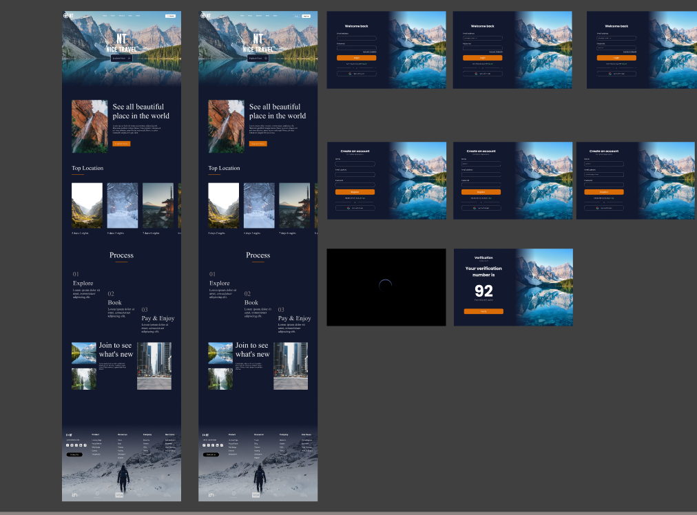
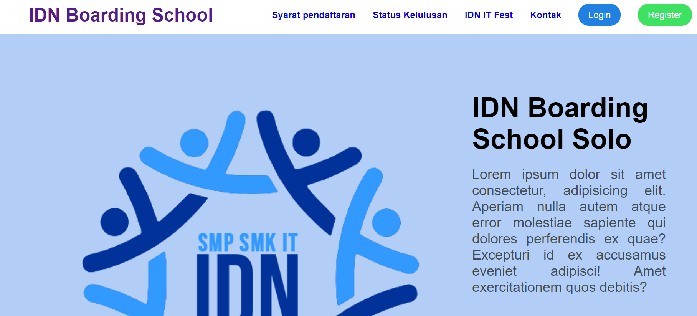
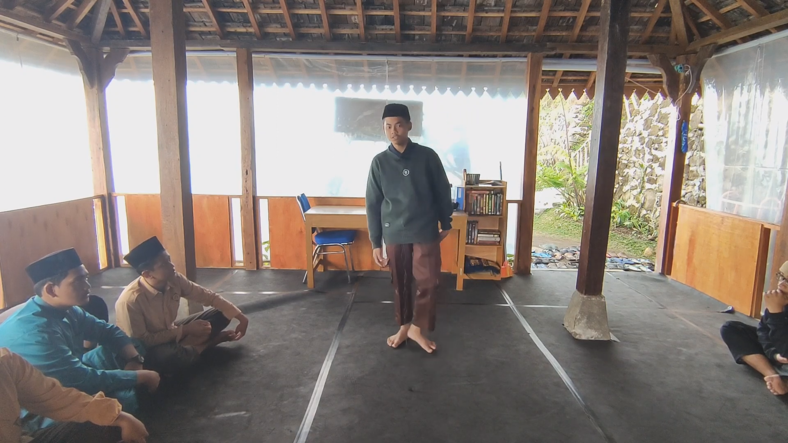
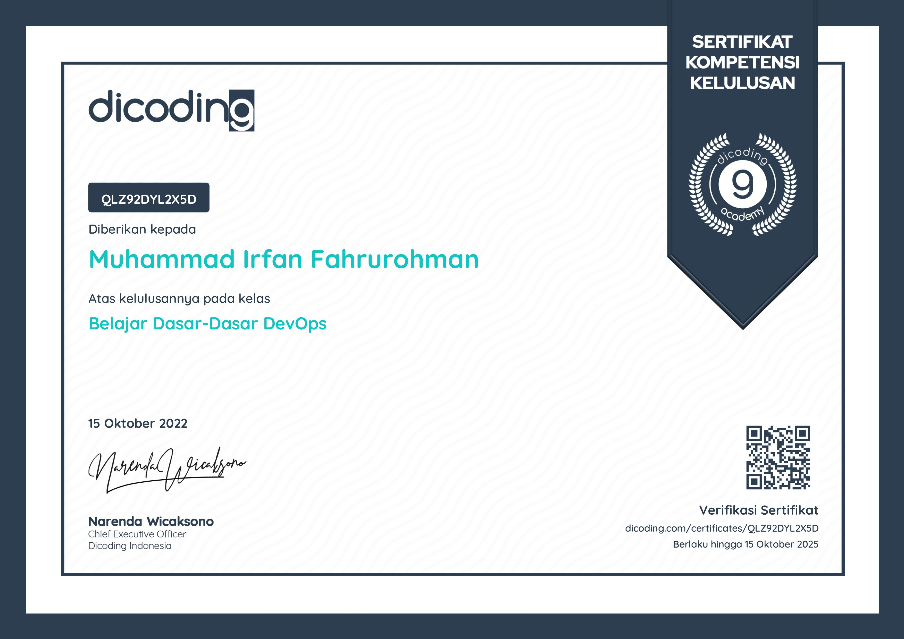
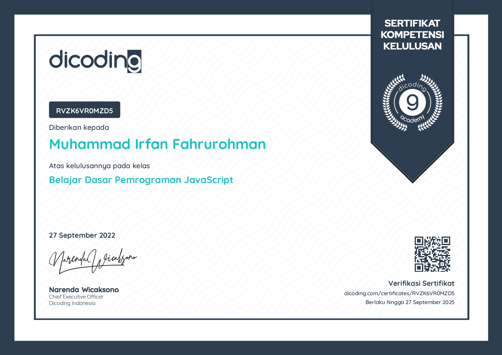
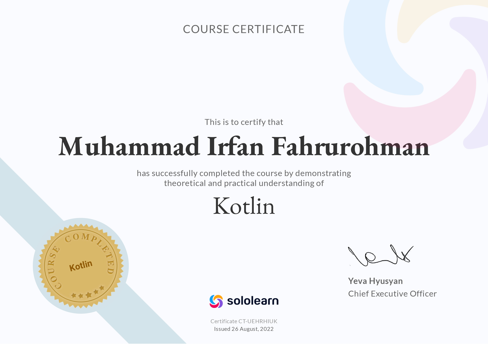

Aku adalah seorang murid yang sedang belajar front end developer serta back end developer, aku juga sudah menguasai beberapa teknik desain seperti UIUX. Jika kalian ingin melihat projectku, silahkan scroll kebawah.
My Skills
UIUX Web Design
Menurut saya saya sudah sedikit bisa untuk mendesain web. Maka kalian bisa minta bantuan saya apabila kalian membutuhkan saran tentang desain web.
Web Development
Saya sedikit belajar tentang web development selama saya berada di IDN. Saya akan berusaha untuk melakukan yang terbaik yang saya bisa.
Public Speaking
Menurut saya, saya mempunyai kemampuan public speaking yang bagus karena saya sudah sering dipanggil maju ataupun maju kedepan untuk apapun itu.

MyUIUX
Designer
Ini adalah hasil dari uiux saya yang saya buat ketika saya diberi tugas untuk memamerkan uiux saya di muktamar festival ke 48.

MyWeb Development
web developer
Dan yang Ini adalah hasil dari web yang saya buat di kelas bersama semua teman teman RPL. Dan web yang saya buat bersama-sama ini adalah web pertama saya.

PublicSpeaking
SoftSkill
Ini adalah salah satu contoh dimana saya melakukan public speaking berbahasa inggris yang diadakan bergiliran di IDN Solo. Waktu itu saya menjelaskan cara membeli sebuah mie indomie.



MyCertificate
Dicoding
Selama di IDN juga saya sudah mendapat beberapa sertifikat dari beberapa lemabaga kursus seperti dicoding dan sololearn. By me